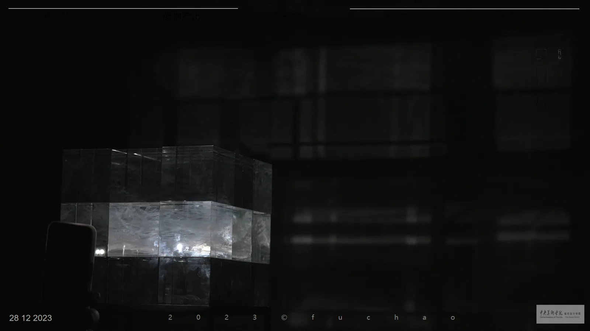
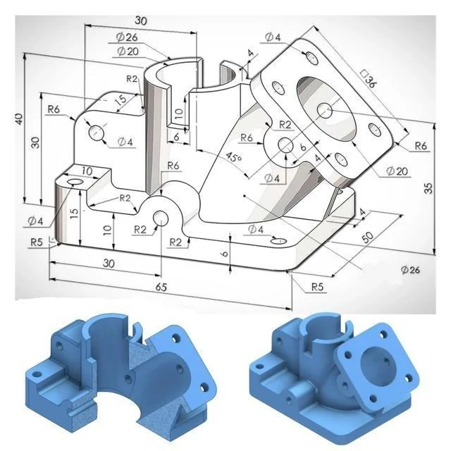
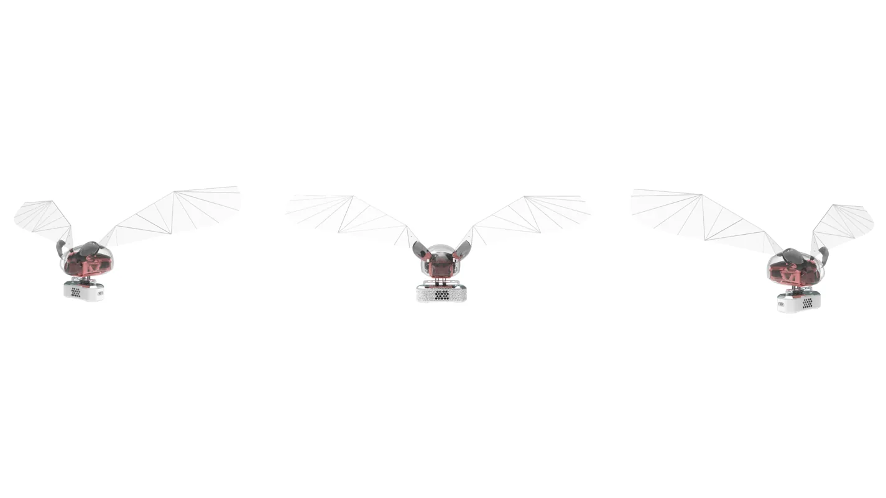

Art & making艺术创作
Things I make outside the brief项目之外，我做的东西

Interactive making交互造物 · 2023
Nest Under Cover覆巢
An immersive interactive space made with two classmates at CAFA's School of City Design. A laser-engraved display with holographic projection sits inside a projected environment; built on Chinese cultural motifs, with interactive animation made in self-taught UE5 Blueprints. Shown at China's first International Digital Art Festival; I led the team to third place in the 15th Lanqiao Cup.与两位同学合作完成的沉浸式交互空间（中央美术学院城市设计学院）。激光雕刻展台结合全息投影，置于投影营造的场域之中；以中国文化元素为题，自学 UE5 蓝图制作交互动画。受邀参展中国首届国际数字艺术节，带队获得第十五届蓝桥杯全国三等奖。
Models & making模型与手作 · 2022
Bamboo Weaving, Rewoven竹编新生
Traditional bamboo weaving combined with parametric modelling. Led a 9-person team from heritage field research in Hangzhou and Fujian through measurement, modelling and bidding to a commercial project built in Hangzhou in 2022. Shown: the finished space in Hangzhou and weaving on site.传统竹编与参数化建模结合。带领 9 人团队，从杭州和福建的非遗田野调研开始，经过空间测量、参数化建模和设计投标，2022 年在杭州实现商业化落地。图为杭州落地后的竹编空间与现场编织。
Photography摄影
Night photography夜景摄影
A night shot by the river; the figures are broken up with pixel and colour-shift effects.江边夜景，人物用像素化和色彩错位处理。

Animation & 3D动画与三维
3D modelling三维建模
3D modelling: a mechanical part built to the dimensions of an engineering drawing, and a subdivision-surface smartwatch (shown as its wireframe).三维建模：按工程图尺寸建模的机械零件，以及细分曲面建模的智能手表（图为布线）。
AI workflowsAI 工作流
AI product-render agentAI 产品渲染 Agent
A ComfyUI node workflow I built that turns a product line drawing into a presentable render in three stages: image generation, IC-Light relighting and edge repainting. Shown: the full workflow.我搭建的 ComfyUI 节点工作流，把产品线稿变成可展示的渲染图，分三段完成：图像生成、IC-Light 重新打光、边缘重绘。图为工作流全貌。
Life & interests生活与爱好
Fitness健身
Training is my daily practice of discipline and body awareness. Shown: a poster I made around it.健身是我日常的自律和身体感知练习。图为以此为题做的一张视觉海报。
Publishing出版
Self-published book自出版书籍
A book I published myself. Shown: an inside spread, black plant silhouettes laid over photographs.我自己出版的一本书。图为内页跨页：黑色的植物剪影叠在实景照片之上。
Animation & 3D动画与三维 · 2022
National Culture Animation Shorts国家文化宣传动画短片
3 characters, 8 scenes and 9 props for three national cultural promotion shorts at CCTV Pioneer Media, broadcast on CCTV-1 in November 2022. Shown: a frame from Cold Dew (Twenty-Four Solar Terms) as aired on CCTV-1.在央视先锋传媒为三部国家文化宣传动画短片设计 3 个角色、8 个场景和 9 个道具，2022 年 11 月在 CCTV-1 播出。图为 CCTV-1 播出的《寒露》画面（二十四节气）。

Animation & 3D动画与三维
Concept flyer概念飞行器
3D modelling and rendering of a concept flyer: a transparent body that shows its inner structure, with ribbed membrane wings. Three angles shown.概念飞行器的三维建模与渲染：透明机身露出内部结构，两侧是带骨架的膜翼。图为三个角度。
Models & making模型与手作
Hand tie-dye手工扎染
Hand tie-dye: two cloths folded and bound in different ways come out with quite different patterns.手工扎染：两块方巾用不同的折叠和捆扎方式，染出完全不同的纹样。
Models & making模型与手作
Camera rig modification摄影器材改装
A tracked rover rebuilt as a phone camera platform: I wrote the control code, drew the exploded view and assembly details, 3D-printed the housing and put it together. Shown: from code to the finished rig.把履带小车改装成手机拍摄平台：编写运行代码，绘制爆炸图和组装细节，3D 打印外壳后组装成实物。图为从代码到成品的过程。
Models & making模型与手作
Model-making模型制作
A curved model mid-print on a 3D printer, with tree supports holding up the overhangs.3D 打印中的曲面模型，树状支撑托住悬空的部分。
Thanks for visiting感谢浏览
Eagan